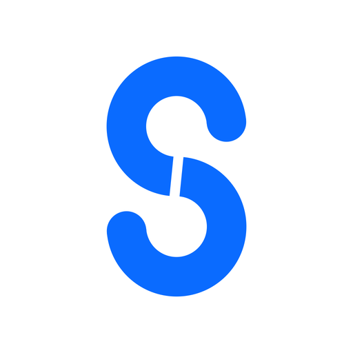
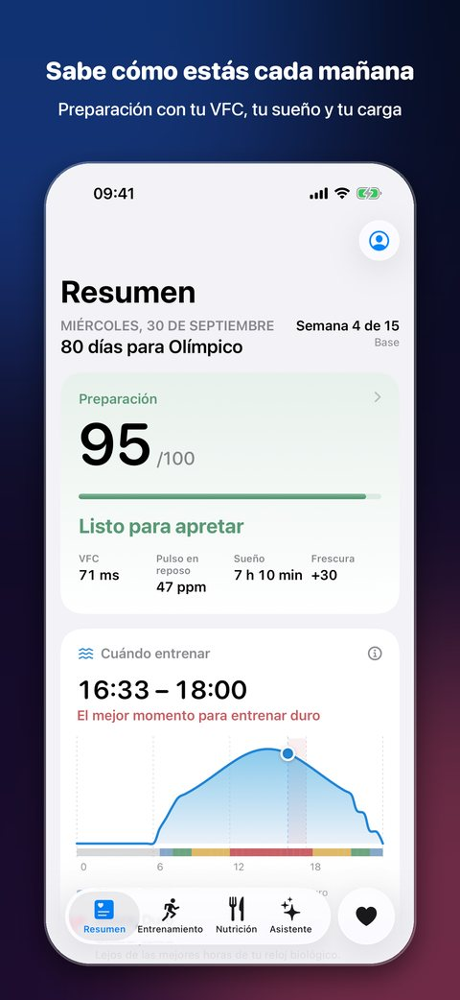
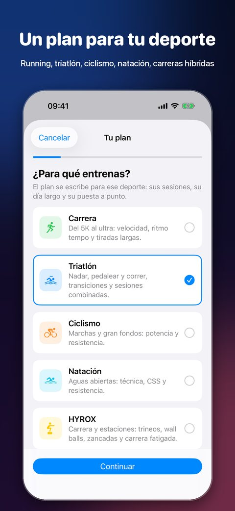
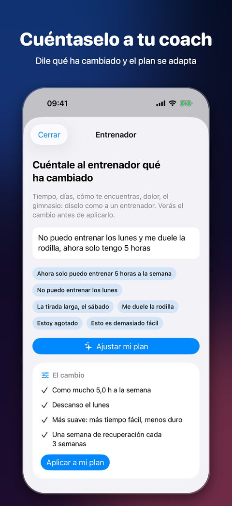
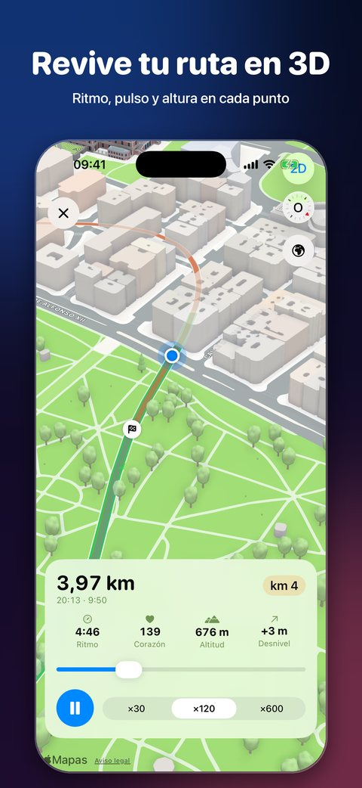
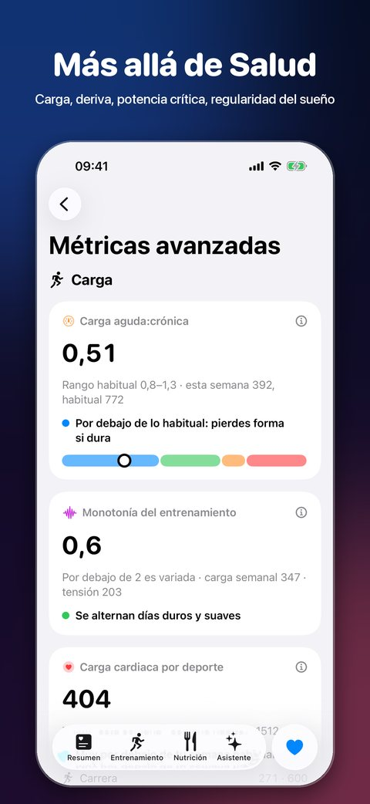
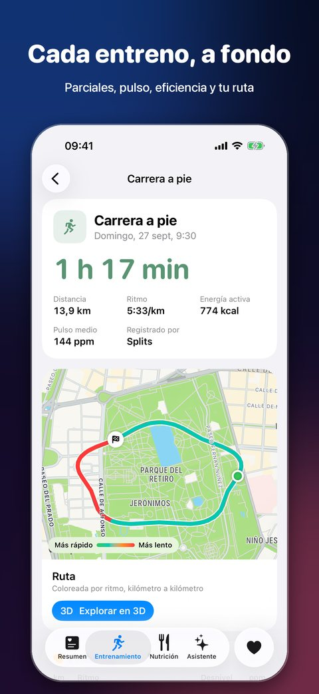
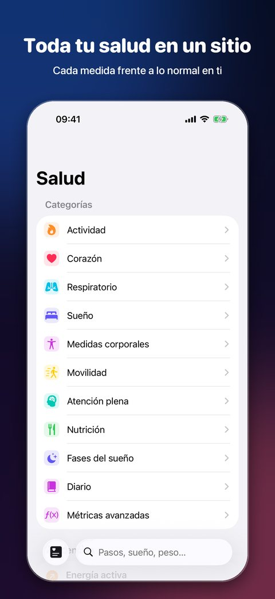

Entrena para tu carrera. Recupera como un pro.
Splits convierte lo que tu iPhone y tu Apple Watch ya registran en un plan que encaja en tu semana, y cada mañana te dice cuánto apretar.
Descargar en el App StorePara iPhone, iPad, Apple Watch, Mac y el nuevo iPhone Duo.







Un plan para tu deporte
Del 5K al ultra, triatlón, gran fondo, aguas abiertas, carreras híbridas y de obstáculos. Unas preguntas y un plan que parte de donde estás.
Cuéntaselo a tu coach
«Esta semana solo cinco horas», «me duele la rodilla». Dilo con tus palabras; el plan te enseña el cambio antes de hacerlo.
Preparado o no
Variabilidad cardiaca, pulso en reposo, sueño y carga frente a lo normal en ti, cada mañana.
Cuándo entrenar
Una marea por horas con el mejor momento de hoy para ir suave o apretar, según tu sueño y tu reloj biológico.
Más allá de Salud
Deriva cardiaca, recuperación del pulso, potencia crítica, reparto de intensidad, regularidad del sueño, cada una con su método.
Cada entreno, en 3D
Parciales, pulso y tu ruta recorrida en 3D. Conecta Motra para ver series y pesos del gimnasio.
Splits Pro
El resumen, la preparación, tu plan, el día de carrera, todos tus entrenamientos y medidas de Salud son gratis. Pro añade lo más avanzado.
- Métricas avanzadas
- El asistente (Apple Intelligence o tu propia clave de IA)
- Temporada de carreras
- Calendario y tiempo
- Rutas en 3D
- Coach de nutrición
Precios en euros; el App Store muestra los de tu país. Las suscripciones se renuevan hasta que las canceles en los ajustes de tu cuenta de Apple.
Preguntas
¿Necesito un Apple Watch?
No, pero la preparación y el sueño lo necesitan por la noche. Cuentan los entrenamientos de cualquier app que escriba en Salud.
¿Sirve solo para correr?
Sí. Elige running y un 5K, 10K, media, maratón, trail o ultra; el plan se escribe para correr.
¿Dónde están mis datos?
En Salud de Apple y en tu iCloud privado. Sin cuenta y sin servidores nuestros.
¿Es consejo médico?
No. Splits no es un dispositivo médico y no diagnostica.